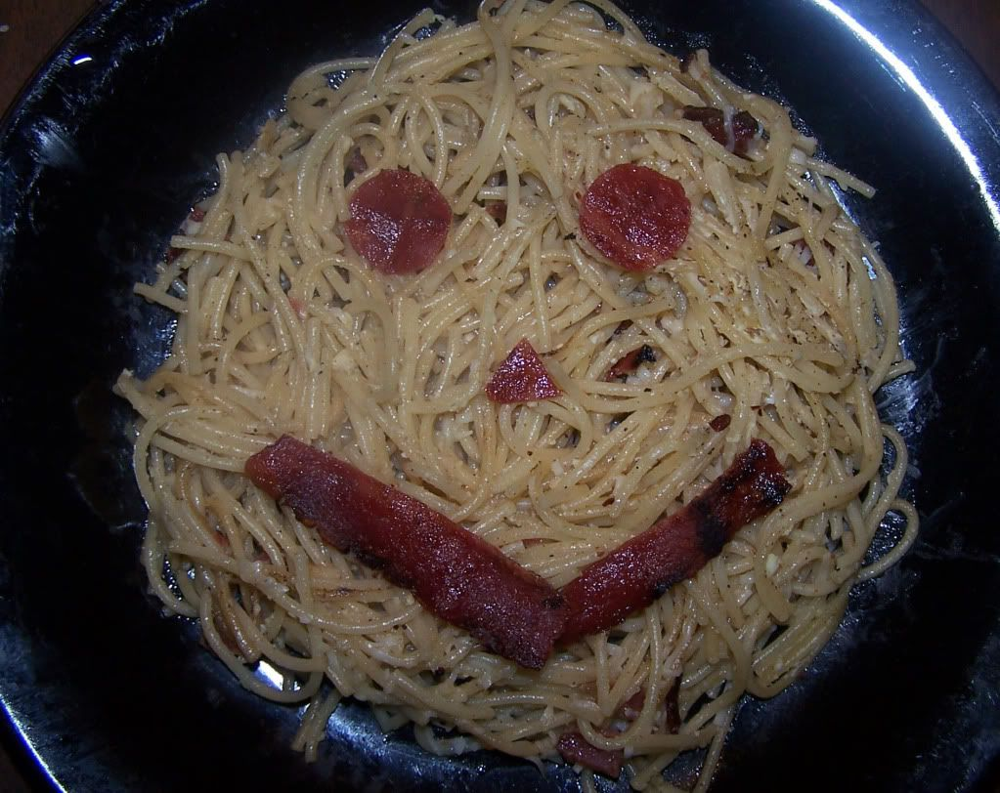

Carbonara

Description
Carbonara (Italian: [karboˈnaːra]) is a pasta dish made with fatty cured pork, hard cheese, eggs, salt, and black pepper. It is typical of the Lazio region of Italy. The dish took its modern form and name in the middle of the 20th century.
The cheese is usually pecorino romano. Some variations use Parmesan, Grana Padano, or a combination of cheeses. Spaghetti is the most common pasta, but rigatoni or bucatini are also used. While guanciale, a cured pork jowl, is traditional, some variations use pancetta, and lardons of smoked bacon are a common substitute outside Italy.
Ingredients
- 300 g spaghetti
- 12 strips bacon, cut into 1/2 cm slices
- 1 tablespoon butter
- 2 cloves garlic, finely chopped
- 1/2 cup button mushrooms or enoki mushroom
- 1/4 cup all-purpose flour
- 1 (68kg) pack Knorr Cream of Mushroom dissolved in 3 cups water
- Optional: 30 g spinach leaves picked
- 1 cup all purpose cream
- salt and pepper to taste
- grated Parmesan Cheese
- Cook pasta according to package directions. Drain well and set aside.
- In a pan, cook the bacon until crispy and set aside.
- Using the same pan, add the butter and saute the garlic until light brown. Add sliced mushrooms and all purpose flour. Mix well.
- Add dissolved Knorr Cream of Mushroom Soup and allow to simmer until slightly thick.
- You may add spinach leaves at this point. Add the all purpose cream. Season with salt and pepper to taste. Mix well. Do not simmer or boil as cream will curdle. Turn off the heat and toss in the cooked pasta.
- Arrange the pasta in a plate then top with crispy bacon and Parmesan cheese.